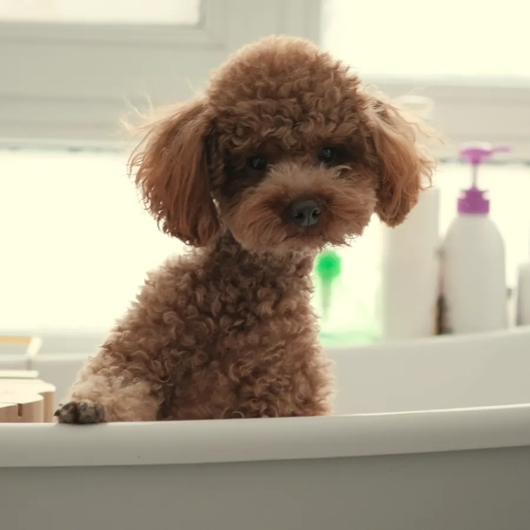
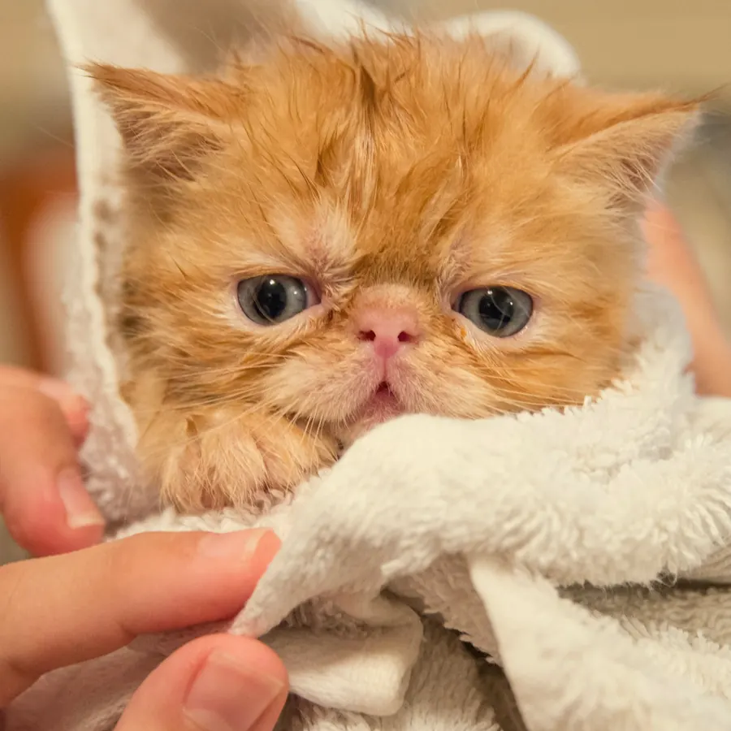
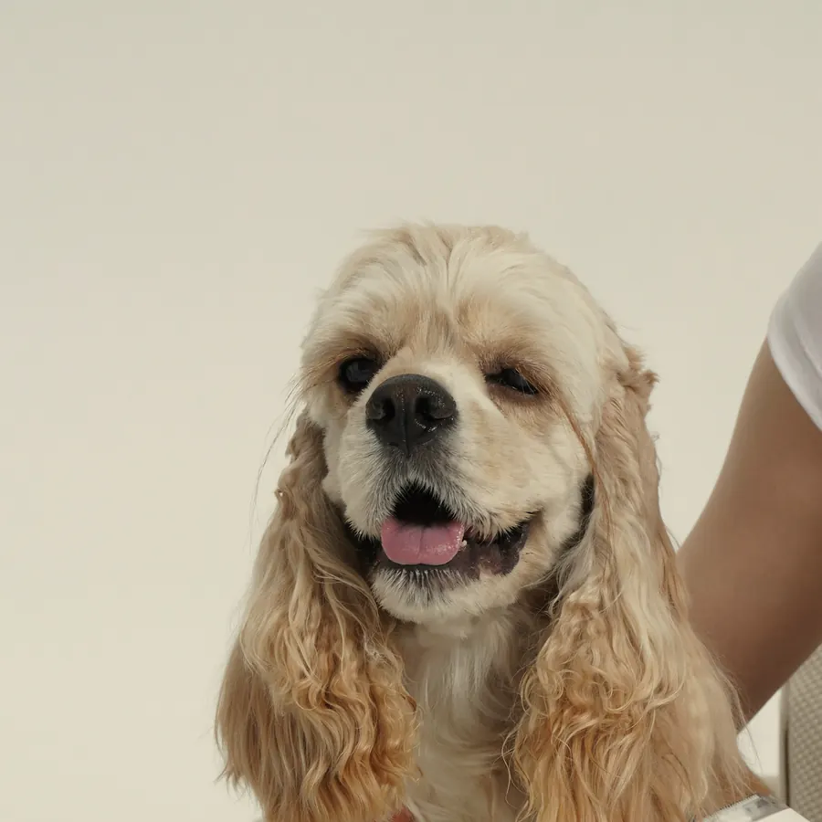

Banho e tosa em Canoas
Patinhas e Fuçinhos Banho e Tosa
Cães e gatos cheirosos, com o carinho da Tia Maura e sem gaiolas: enquanto esperam, ficam soltos.
4,9 no Google, em 118 avaliaçõesServiços
Do banho ao laço, com capricho
Paciência com os medrosos, calma com os idosos e cuidado de sobra. Tem cliente que leva os pets há mais de 10 anos.



Fotos ilustrativas
-
Banho
Para cães e gatos, feito com calma, até com os mais medrosos.
-
Tosa
Tosa bem feita e caprichada, no estilo que combina com o seu pet.
-
Gatos também
Banho e tosa para felinos, inclusive a tosa higiênica.
-
Corte de unhas
Unhas aparadas com cuidado, para andar confortável em casa.
-
Finalização
Brincos, tiara e colar para sair da tosa cheio de estilo.
-
Sem gaiolas
Enquanto esperam, os pets ficam soltos, num espaço só para eles.
“Meu cachorro volta sempre cheiroso e tranquilo!”
Lênio F., no Google
Avaliações no Google
Quem leva, volta
“Levei minha cachorrinha, que já é idosa, e foi muito bem atendida. Voltou calminha, sem estresse.”
Rafaella V.
“O atendimento da Maura é carinhoso, cuidadoso e responsável, e fez a minha gatinha se sentir confortável e tranquila.”
Luiza V.
“Com carinho, cuidado e muito capricho, Chérie voltou pra casa cheirosíssima e muito estilosa: de brincos, tiara, colar e anéis!!”
Karem
“Nossos bichinhos são muito bem tratados, os meus se sentem em casa com a Tia Maura.”
Léia S.
“Minha primeira vez e minha dupla voltou super macia, com tosa bem feita.”
Karla M.
“Cansei de levar em lugares que maltratavam a minha pequena Mel, depois que descobri a Maura, não larguei mais!”
Eliene F.
Agenda pelo WhatsApp
Marque o banho do seu pet
Conte o nome, a raça e o porte do seu pet e combine o melhor horário.
- Segunda a sexta
- 9h30 às 18h
- Sábado e domingo
- Fechado
- Entrada e estacionamento acessíveis para cadeira de rodas
- Cartão de crédito, débito e pagamento por aproximação
Recado de quem fez esta página
Para a equipe da Patinhas e Fuçinhos
Sou o Conrado Lemos, desenvolvedor aqui de Canoas. Montei esta página para mostrar como ficaria o site de vocês. Tudo acima é o que o cliente veria.
- A nota, o número de avaliações, os horários, o endereço, os serviços e os trechos de avaliação vieram do perfil de vocês no Google.
- Todas as fotos são ilustrativas, de banco de imagens. Na versão final entram fotos profissionais dos pets que vocês atendem e do espaço.
- Textos, serviços e avaliações em destaque são revisados e escolhidos por vocês.
R$ 1.000, com o site no ar em até 3 diasNo endereço próprio de vocês. O pagamento é só na entrega, depois da aprovação de vocês. O domínio é à parte, cerca de R$ 40 a R$ 55 por ano.
Gostaram? É só responder a minha mensagem no WhatsApp.